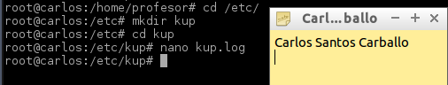
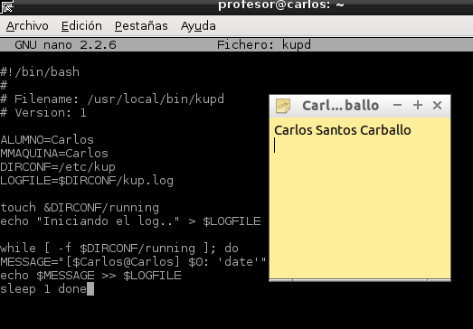
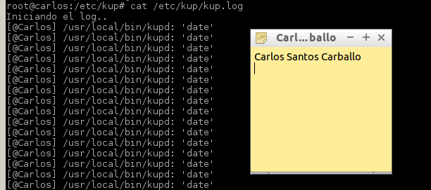
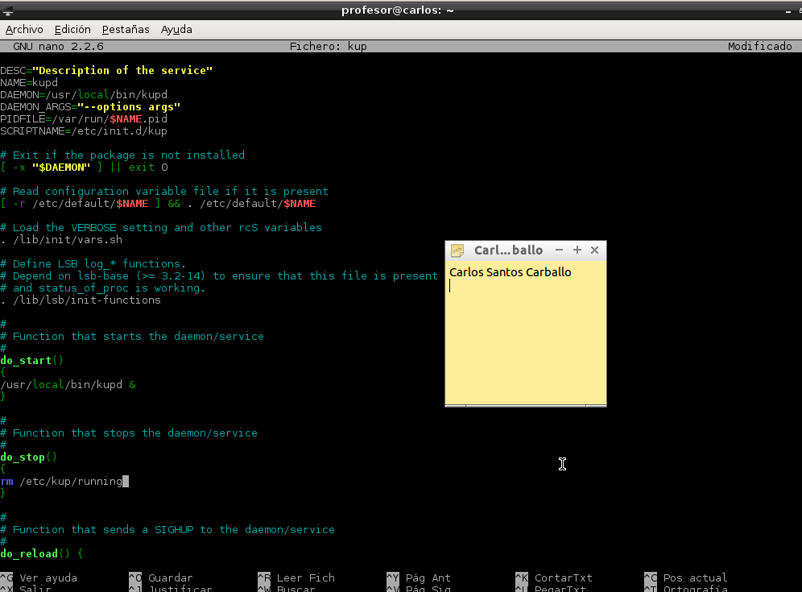
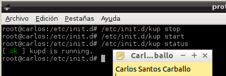
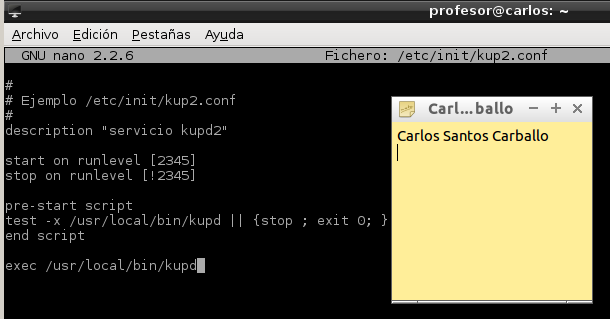
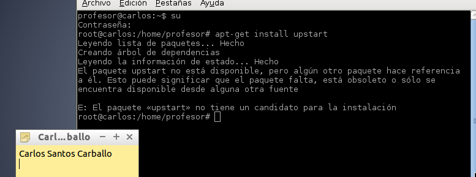

- Módulo: Sistemas Operativos
- Título del trabajo Crear un servicio
- Componentes del grupo: Carlos Santos Carballo
- Curso Académico: 2014/2015
- Fecha de entrega: 21 de noviembre de 2014
Crear la carpeta "/etc/kup", y un fichero "/etc/kup/kup.log" vacío.
Crear un script "/usr/local/bin/kupd" que será nuestro demonio.
Dar permisos ejecución al script.Ejecutar "cat /etc/kup/kup.log"
Ahora vamos a crear un script "/etc/init.d/kup" y damos permisos al script
Probar que el guión de inicio/parada funciona correctamente con nuestro servicio, mediante "/etc/init.d/kup [start|stop|status]"
Ahora vamos a configurar el servicio, al estilo Upstart.Crear un fichero /etc/init/kup2.conf.
A continuación procedemos a instalar upstart,a mi me da un error y no me deja instalarlo.
